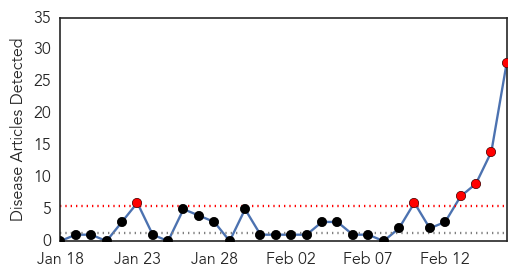
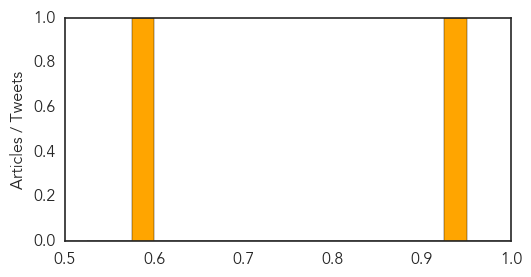

Hepatitis
30-Day Web Trend
6 alerts, 0 warnings

30-Day Twitter Trend
0 alerts, 0 warnings

Article Locations

Article Confidences

Top Articles:
- 0.985
- how food gets contaminated and what to do
- 0.973
- Bad berries: Cairns woman among nine confirmed cases of Hepatitis A
- 0.931
- Hepatitis A infections continue to rise as three cases confirmed in Queensland
- 0.929
- The number of people with hepatitis A from frozen berries has doubled now with Queensland outbreak
- 0.918
- ‘Terrified’ Victorian woman waiting to find out whether she has Hepatitis A from contaminated frozen berries
- 0.900
- Woman 'almost certainly has hepatitis A' after eating contaminated frozen berries imported from China
- 0.873
- 9 Australians contract Hep A eating cherries - Emirates 24
- 0.871
- Faeces could be behind Hep A outbreak
- 0.850
- Hepatitis A Caused by Recalled Berries: Find Out What's Safe to Eat
- 0.814
- Ballarat woman in berries scare
- 0.814
- In Australia, Hepatitis A From Nanna's Frozen Berries?
- 0.805
- Australians get hepatitis A from Chinese berries
- 0.779
- Patties Foods recalls berries packed in China
- 0.762
- Poor Hygiene Amongst Chinese Workers Could Have Been Cause Of Hepatitis A Outbreak Through Nanna's Frozen Berries
- 0.747
- Queensland cases in berry hepatitis scare
- 0.724
- A 'berry' dangerous mix
- 0.721
- Nearly 95 per cent of foreign fruits and vegetables are NOT tested for diseases before they land on the supermarket shelf... after nine people contract hepatitis A from Chinese frozen berries
- 0.668
- Three new cases of hepatitis A linked to frozen berry contamination in QLD 16/02/2015
- 0.650
- Orencia (Abatacept Powder for intravenous infusion; Abatacept solution for Injection) Drug
- 0.603
- Hygiene 'likely cause' of berries hep A
- 0.592
- Frozen berries evidence crucial for hepatitis A compensation claims
- 0.570
- Blood donors who have eaten recalled berries told to contact Red Cross
- 0.557
- Trudy Sims may be 10th person with hepatitis A from berries.
- 0.526
- More victims of berry virus
- 0.520
- Hepatitis A caused by frozen berries highlights concerns about Australia's food security
- 0.518
- Liver Disease: A Poverty-Based Health Crisis?
- 0.515
- What You Need to Know About Hepatitis A
- 0.512
- Frozen Berries Recalled In Australia After Hepatitis A Scare From Chinese Frozen Berries
Top Tweets:
-
No tweets found for Feb 16, 2015
West Nile Virus
30-Day Web Trend
2 alerts, 0 warnings

30-Day Twitter Trend
0 alerts, 0 warnings

Article Locations


Article Confidences
Top Articles:
Top Tweets:
-
No tweets found for Feb 16, 2015